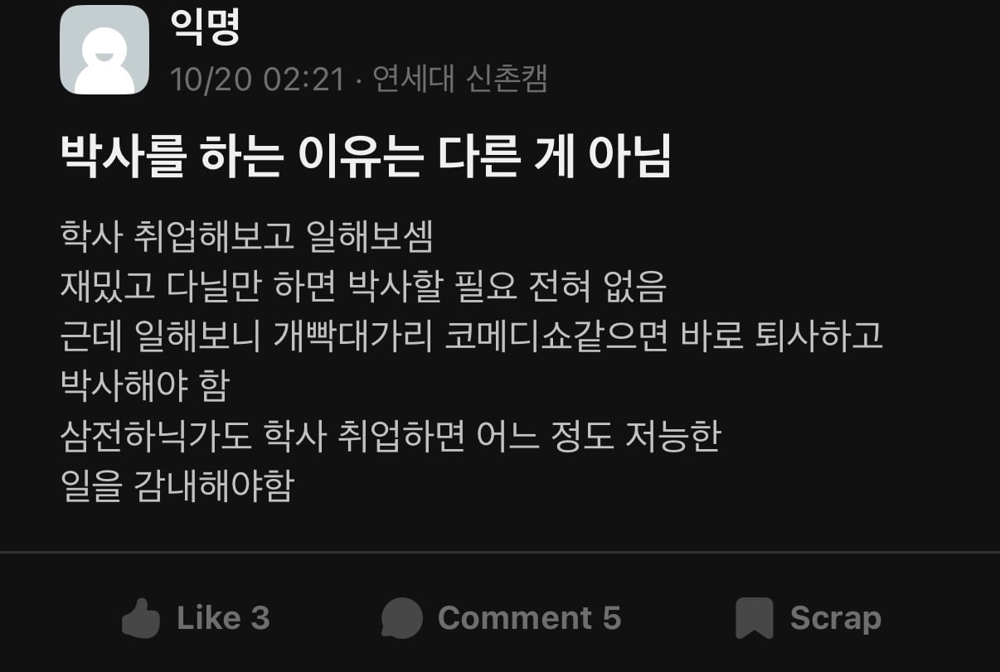

일하다가 개빡대가리 코미디쇼 같은 일만 하는 것 같아서
그 즉시 퇴사하고 대학원 입학 ㅋㅋ

일하다가 개빡대가리 코미디쇼 같은 일만 하는 것 같아서
그 즉시 퇴사하고 대학원 입학 ㅋㅋ
석사는 보통 학사랑 묶이지
박사 위주로 돌아가는 곳에서는 석사는 그냥 경력 2년 있는 학사 취급임 구분 안함
웬만한 연구직들 다 박사위주로 돌아가는건 당연한데 그걸 표현을 저렇게 하면 안되지. 빡대가리 코미디쇼니 저능한일이니 하는건 선민의식에 가득 찬걸로밖에 안보임.
그래서 재밌으면 계속 다니라고도 하셨자너
핀트를 못잡네, 개빡대가리 코미디쇼에 저능한 일들이 재밌으면 계속 다니셈^^ 나는 못참아서 박사함 이러면 안된다고...
개붕이들아 제목을 좀 읽어라 코미디쇼 인증하지말고. '의외로 대학원 가는 케이스' 즉, 가끔 있는 케이스라잖아
그리고 대학원에 들어가서 교수가 시키는 얼토당토않은 일을 하게 되지
ㆍ생전 처음 듣는 사람의 이름 석자만 가지고 이 사람의 CV만들어내기 (교수님 이메일 비번 빼돌려서 소속 지위 알아내서 확인)
ㆍ술은 아무리 잘 돌려써도 연구비로 결제 불가능하다고 교수 생활만 30년+ 한 분께 8번째 설명드리기 (몇 번 시도 뒤 해명 포기하고 사비로 결제)
ㆍ졸업하고 다른 데 직장 얻었으면 이제 랩미팅에 그만 부르셔야한다는 것 이해시키기 (3개월 경과 노력 중)
누가 연구비로 술을 먹고 비용처리 해달라고 떼쓰나 미친 새끼네
술 얘기는 걍 대놓고 네가 사비로 사라 라는 뜻인가보네
아직도 불려다니나보구나 고생한다 박사님개붕쿤...
그냥 기본적으로 연구소라고 이름 붙은 곳에서 일하고 싶으면 웬만하면 석사 이상임
취업했는데 일머리 사회성 하나도 없는 상사가 '박사'라는 명함 하나로 회사에서 얘 편만 들어주고 밀어주면 그거에 석 나가서 이악물고 박사 온 사람들 가끔 있는거같음

회사에서 할 빡대가리 업무를 대학원에서 먼저하는 차이점
박사와 학사의 차이는 대졸과 고졸의 차이 느낌
심리학 직군처럼 석,박사 안따면 좆도 답없는 직군도 있더라
실제로 나 아는 애도 포스코 전기관리직으로 들어갔다가 맨날 아침마다 티비엠하고 안전 안전 안전! 이러는거 저급해보인다고 박사 하고 있는애 있긴 함ㅋㅋㅋ
그게 좋은건데 ㄹㅇㅋㅋ
난 대학졸업하고 석사만있으면되는 줄 알았거든? 근데 자격증시험을 뛰어넘으려면 박사가 필요하고 대학원을 다녀야함
그리고 취업도 다 그만한 스팩을 요구함.. 걍 취업시장이 ㅈ박았다는게 이해갔음
대학원은 선택이 아닌 필수였다는 걸
내 주변에 둘 있는데
둘 다 비전이 있는게 아니라 공부말고는 할 줄 아는게 없어서 계속한다는 느낌이었음
한명은 박사 포기하고 쉬었음 됨
나도 나이먹으니 박사나 기술사 필요한가 싶다.....
진짜 빡대가리들
진짜 대학교가 필요한가 의문이 드는 직업이 진짜 많지
환경쪽으로 일하는데 여긴 박사학위 없으면 시간 지날수록 점점 무시받는 경향이 큰거 같음.. 특히, 박사끼리 텃세가 생각보다 심하더라고 학교도 따지고
직장이서 내가 습듭력이 좋고 일도 잘해서 다 우습게 보이기도 하고 어쩌다 있는 지루한 반복업무 때문에 이게 맞나 싶다가도
괜한 노력 안해도 인정받기도 하고 괜히 똑똑한 놈들 사이에 껴있으면 그게 오히려 힘들거 같아서 지금에 너무 만족함
석사는 어떤일 함